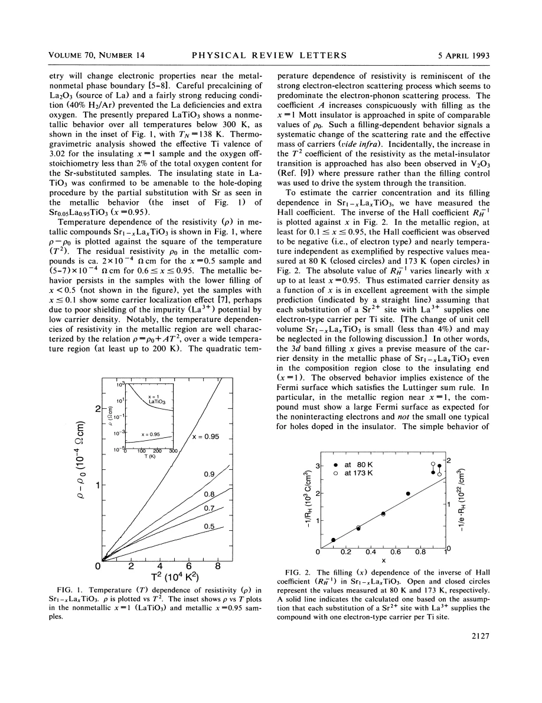
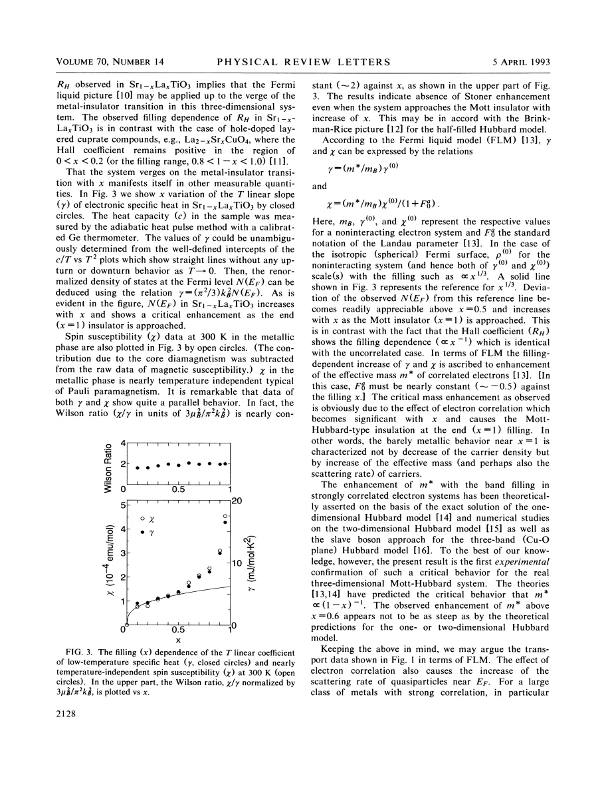
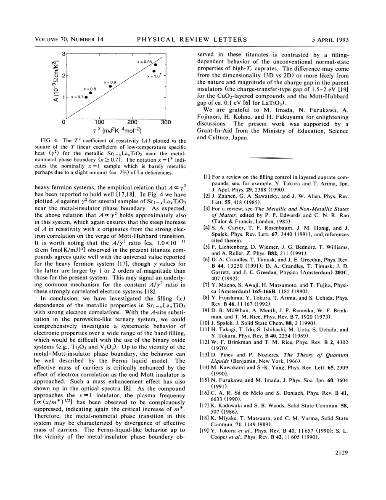

experiment · Tokura · supplied source 1993
Filling Dependence of Electronic Properties on the Verge of Metal-Mott-Insulator Transitions in Sr1−xLaxTiO3
The supplied 1993 titanate study combines Hall, heat-capacity, susceptibility and resistivity evidence for increasing effective mass near a filling-controlled Mott boundary.
The question: Does the metallic titanate approach its insulating endpoint by losing carriers or by making its carriers strongly renormalized?
Before you start: the few terms you need
- Mott insulator: interactions localize electrons at commensurate filling
- Fermi liquid: low-energy quasiparticles with renormalized parameters
- Sommerfeld coefficient γ: electronic heat capacity divided by temperature at low T
- Hall coefficient RH: transverse voltage response, a carrier-density estimate only under assumptions
See → explain → test
Understand it in four pictures.
Picture 1 / 4
Fix the direction of x
Look for: Here x is the La fraction in Sr1−xLaxTiO3, so x = 1 is the d1 LaTiO3 endpoint.
Swipe across the picture to read every label, or enlarge it below.
- SrTiO3: d0
- Add La3+ for Sr2+
- Increase d filling
- LaTiO3: d1
Teaching ionic count; source 45 uses the complementary Sr fraction as x.
Increasing x increases the nominal electron filling toward the Mott insulator.
Picture 2 / 4
Count and weigh separately
Look for: The Hall carrier estimate follows filling while heat-capacity and spin response grow more strongly.
Swipe across the picture to read every label, or enlarge it below.
- Hall: carrier count
- Heat capacity: DOS
- Susceptibility: spin response
Teaching probe comparison; no one-band Hall identity is assumed beyond the paper's analysis.
A nearly metallic carrier count does not prevent a large effective mass.
Picture 3 / 4
Read the slope of a T² plot
Look for: The slope A of resistivity versus T² becomes larger toward the insulating boundary.
Swipe across the picture to read every label, or enlarge it below.
- Plot ρ − ρ0 versus T²
- Read slope A
- Compare A with γ²
Teaching fitting workflow, not digitized transport data; the units and fitted ranges belong to the source.
Fermi-liquid-like temperature dependence can coexist with strong correlations.
Picture 4 / 4
Synthesize the evidence
Look for: Growing γ, χ and A do not accompany a collapse of the Hall carrier estimate.
Swipe across the picture to read every label, or enlarge it below.
- Several enhanced responses
- Renormalized Fermi-liquid model
- Mass enhancement near Mott edge
Interpretation within the source model; a mathematical divergence is not directly measured at x = 1.
The authors interpret the approach as strong mass renormalization rather than simple carrier depletion.
Predict before revealing
As x approaches the metallic edge near one, Hall counting stays large but γ and A increase strongly. What interpretation does the source favor?
Choose an answer, then compare the reasoning.
The combined probes distinguish carrier density from quasiparticle renormalization. Fermi-liquid-like laws do not imply weak interactions.
Read the answer
Strong mass and scattering renormalization with a large carrier count The combined probes distinguish carrier density from quasiparticle renormalization. Fermi-liquid-like laws do not imply weak interactions.
Go deeper Follow the full argument
Translate the composition before comparing papers
Tokura and colleagues write Sr1−xLaxTiO3, making x the La concentration and nominal Ti 3d electron filling. At x = 0 the end member is SrTiO3 with nominal d0 Ti4+; at x = 1 it is LaTiO3 with d1 Ti3+. The latter is an antiferromagnetic Mott-Hubbard insulator when stoichiometry is controlled carefully. Replacing some La with Sr removes electrons and can produce a metal near x around 0.95. Source 45 describes the same family as La1−xSrxTiO3, reversing the meaning of x. Consequently a plot that rises as x approaches one here corresponds to approaching small Sr fraction there. This elementary translation prevents a false disagreement about which direction approaches the insulating state or which substitution introduces holes relative to LaTiO3.
Why sample chemistry is part of the argument
Close to the insulating endpoint, small La deficiency or oxygen off-stoichiometry can change the electronic state. The authors therefore emphasize reducing growth conditions and composition checks. Their nearly stoichiometric x = 1 sample is insulating with antiferromagnetic ordering around 138 K, whereas x = 0.95 is metallic. A nominally x = 1 sample labeled 1* in a later plot is barely metallic, plausibly because of a small La deficiency. These are not interchangeable endpoints. The clean comparison asks how properties vary among metallic samples as filling increases, with a separately established insulating reference. Far toward low carrier density, localization effects complicate the simplest metallic picture. The paper's Fermi-liquid argument is therefore restricted to the investigated metallic regime, not every composition from zero to one.
The Hall result separates count from renormalization
The metallic samples have negative Hall coefficients with weak temperature dependence in the reported range. The magnitude of the inverse Hall coefficient follows the filling reasonably well, consistent with about one extra electron per La substituted for Sr. Within the paper's carrier-count interpretation, the metal near x = 1 retains a large electron Fermi surface rather than a tiny Fermi surface counting only doped holes. This contrasts with familiar hole-doped cuprate behavior discussed by the authors. A Hall coefficient is nevertheless a transport observable and need not equal exactly −1/(ne) in every multiband or strongly anisotropic metal. The strength of this work is the agreement with the simple count in these samples, used together with other probes rather than elevated to a universal rule for correlated systems.
Heat capacity and susceptibility reveal an enhanced scale
The low-temperature electronic heat-capacity coefficient γ increases strongly toward the insulating endpoint. The spin susceptibility, after subtracting core diamagnetism, shows a parallel filling dependence and is approximately Pauli-like in the metallic state. Their ratio gives a Wilson ratio near two over the reported range. In the authors' Fermi-liquid analysis, this approximately constant ratio argues against a progressively increasing extra Stoner factor and favors a growing quasiparticle mass. A noninteracting spherical-band reference would give a much gentler filling dependence, proportional to x to the one-third power. The distinction is not that interactions disappear because the curves look Pauli-like: a Fermi liquid can have very heavy quasiparticles. The enhancement is inferred from several coefficients whose common dependence is more informative than any one alone.
Transport cross-checks the thermodynamic interpretation
The metallic resistivity is well described over substantial reported ranges by ρ = ρ0 + AT². Its coefficient A rises conspicuously as the insulating endpoint is approached. Plotting A against γ² produces an approximate proportionality similar to the empirical comparison made for heavy-fermion metals. This supports an interaction-driven increase of scattering and mass scales, although the relation is empirical and depends on the material and conventions. The conclusion proposes that the Mott approach is characterized by critical mass enhancement, rather than primarily by disappearance of carriers. No experiment measures an infinite mass in the insulating sample, and the source itself notes that the enhancement is less steep than some low-dimensional theoretical predictions. The comparison to cuprates is an argument about dimensionality and charge-gap character, not a demonstration that the same microscopic physics describes all oxides.
Translate the mathematics Key equations and symbol meanings
ρ(T) = ρ0 + AT²
Symbols: ρ: resistivity; ρ0: residual resistivity; A: quadratic-temperature coefficient.
Straight lines against T² reveal A. A large coefficient can indicate strongly renormalized electron scattering while retaining Fermi-liquid-like temperature dependence.
γ = (π²kB²/3)N(EF)
Symbols: γ: electronic heat-capacity coefficient; N(EF): quasiparticle density of states using a consistent spin/molar convention; kB: Boltzmann constant.
γ probes an enhanced low-energy density of states, interpreted here through effective-mass renormalization.
A ∝ γ²
Symbols: A: resistivity T² coefficient; γ: low-temperature electronic heat-capacity coefficient.
Approximate empirical scaling among the studied metallic samples near the Mott boundary; not a universal exact identity.
Read the evidence A guided look at the original figures

Open the full original page ↗

Open the full original page ↗

Open the full original page ↗
What this paper does—and does not—establish
- Historical 1993 study of specific metallic samples, not a current universal Mott phase diagram.
- Hall carrier counting and mass extraction use a Fermi-liquid interpretation; divergent mass at the exact insulating endpoint is an extrapolation.
- Small stoichiometry changes are important near the boundary; x convention differs from source 45.
Explain it back.
Try answering aloud before opening the explanation.
Is x the Sr fraction in this paper?
No. It is the La fraction in Sr1−xLaxTiO3, complementary to source 45's x.
Why distinguish the sample labeled 1*?
Its slight nonstoichiometry makes it barely metallic, unlike the nearly stoichiometric insulating endpoint.
What does an approximately constant Wilson ratio imply here?
The spin and heat-capacity enhancements track each other; the authors do not require a separately growing Stoner enhancement.
Connect the next paper.
Source version, reading coverage and preservation
All four pages read in extracted text; rendered plots and equations on pages 2–4 checked.
Reviewed body pages: 1, 2, 3, 4. Cited works not independently re-read.
Original file retained byte for byte. SHA-256: bf98d680786c43a0a034cf716897edbd13d97ab4a5df8d378449c610c1335e74
Filename: PRL - Tokura - Electronic properties near the Mott transition in LaSrTiO3 - 1993.pdf.